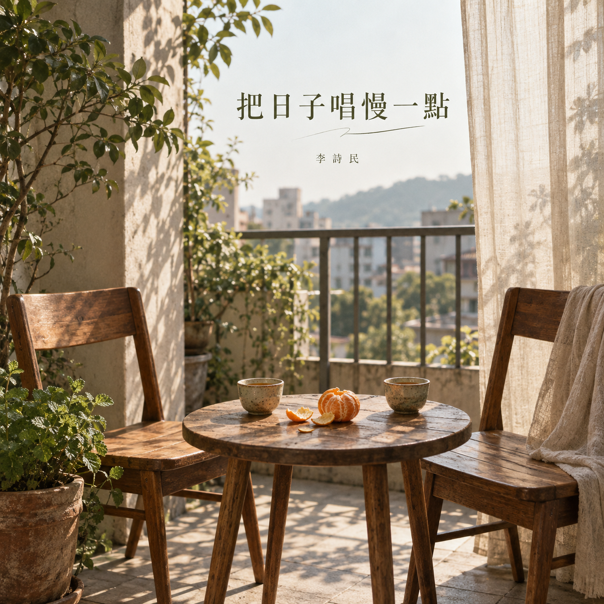

<!doctype html><html lang="zh-Hant"><meta charset="utf-8"><meta name="viewport" content="width=device-width,initial-scale=1"><title>把日子唱慢一點｜李詩民・專輯下載</title><meta name="description" content="李詩民《把日子唱慢一點》20 首原創國語歌曲，完整試聽與下載。"><style>body{margin:0;background:#f3eee4;color:#30392c;font:16px/1.8 system-ui}main{max-width:1000px;margin:auto;padding:48px 24px}.hero{display:grid;grid-template-columns:300px 1fr;gap:36px;align-items:center}img{width:100%;border-radius:10px}h1{font-size:38px;line-height:1.3}a{color:#375336}a.button{display:inline-block;background:#3e5b3c;color:white;text-decoration:none;padding:10px 18px;border-radius:6px;margin:4px 8px 4px 0}ol{padding:0;list-style:none}li{display:grid;grid-template-columns:48px 1fr auto;align-items:center;gap:18px;padding:20px 0;border-bottom:1px solid #d5d4c8}strong{font-size:20px}small{display:block;color:#717568}audio{width:100%;margin-top:10px}.num{font-size:22px;color:#8c917e}@media(max-width:650px){.hero{grid-template-columns:1fr}.hero img{max-width:300px}h1{font-size:30px}li{grid-template-columns:32px 1fr}li>a{grid-column:2}}</style><main><section class="hero"><div><small>李詩民 · 20 首原創國語歌曲 · 2026.09.15</small><h1>把日子唱慢一點</h1><p>把時間留給早餐、家人、老朋友，和陪你慢慢回家的人。</p><a class="button" href="/?album=slow-days&track=1">進入黑膠播放器</a><a class="button" href="assets/audio/slow-days/slow-days-album.zip" download>下載整張專輯 ZIP</a><small>Suno V6 × 李詩民本人聲音 · AI 輔助音樂創作</small></div></section><ol><li><span class="num">01</span><div><strong>把日子唱慢一點</strong><small>把你的名字，多念一遍。 · 3:26</small><audio controls preload="none" src="assets/audio/slow-days/track01.mp3"></audio></div><a class="button" href="assets/audio/slow-days/track01.mp3" download="01-把日子唱慢一點.mp3">下載 MP3</a></li><li><span class="num">02</span><div><strong>早餐店的老位置</strong><small>這次，把星期六留給重逢。 · 2:30</small><audio controls preload="none" src="assets/audio/slow-days/track02.mp3"></audio></div><a class="button" href="assets/audio/slow-days/track02.mp3" download="02-早餐店的老位置.mp3">下載 MP3</a></li><li><span class="num">03</span><div><strong>今天不趕路</strong><small>回家可以有好多方向。 · 3:26</small><audio controls preload="none" src="assets/audio/slow-days/track03.mp3"></audio></div><a class="button" href="assets/audio/slow-days/track03.mp3" download="03-今天不趕路.mp3">下載 MP3</a></li><li><span class="num">04</span><div><strong>陽台上的星期天</strong><small>風吹過來，就坐近一點。 · 3:15</small><audio controls preload="none" src="assets/audio/slow-days/track04.mp3"></audio></div><a class="button" href="assets/audio/slow-days/track04.mp3" download="04-陽台上的星期天.mp3">下載 MP3</a></li><li><span class="num">05</span><div><strong>手機翻過來</strong><small>你就在眼前，我想把話聽完。 · 3:07</small><audio controls preload="none" src="assets/audio/slow-days/track05.mp3"></audio></div><a class="button" href="assets/audio/slow-days/track05.mp3" download="05-手機翻過來.mp3">下載 MP3</a></li><li><span class="num">06</span><div><strong>飯還熱著</strong><small>今天做得不好，也能回來坐。 · 3:14</small><audio controls preload="none" src="assets/audio/slow-days/track06.mp3"></audio></div><a class="button" href="assets/audio/slow-days/track06.mp3" download="06-飯還熱著.mp3">下載 MP3</a></li><li><span class="num">07</span><div><strong>媽媽又問吃飽沒</strong><small>這次電話，讓我晚一點掛。 · 3:09</small><audio controls preload="none" src="assets/audio/slow-days/track07.mp3"></audio></div><a class="button" href="assets/audio/slow-days/track07.mp3" download="07-媽媽又問吃飽沒.mp3">下載 MP3</a></li><li><span class="num">08</span><div><strong>爸爸修好的電風扇</strong><small>這回換我，坐在你的身旁。 · 3:12</small><audio controls preload="none" src="assets/audio/slow-days/track08.mp3"></audio></div><a class="button" href="assets/audio/slow-days/track08.mp3" download="08-爸爸修好的電風扇.mp3">下載 MP3</a></li><li><span class="num">09</span><div><strong>市場裡的兩把青菜</strong><small>兩把青菜，半袋晚霞。 · 3:28</small><audio controls preload="none" src="assets/audio/slow-days/track09.mp3"></audio></div><a class="button" href="assets/audio/slow-days/track09.mp3" download="09-市場裡的兩把青菜.mp3">下載 MP3</a></li><li><span class="num">10</span><div><strong>舊相簿裡的笑聲</strong><small>照片沒拍到的，我也想記得。 · 3:07</small><audio controls preload="none" src="assets/audio/slow-days/track10.mp3"></audio></div><a class="button" href="assets/audio/slow-days/track10.mp3" download="10-舊相簿裡的笑聲.mp3">下載 MP3</a></li><li><span class="num">11</span><div><strong>老朋友，坐一下</strong><small>不用帶著成績來說話。 · 2:40</small><audio controls preload="none" src="assets/audio/slow-days/track11.mp3"></audio></div><a class="button" href="assets/audio/slow-days/track11.mp3" download="11-老朋友，坐一下.mp3">下載 MP3</a></li><li><span class="num">12</span><div><strong>你先睡，我快到了</strong><small>我會輕輕把門關好。 · 3:15</small><audio controls preload="none" src="assets/audio/slow-days/track12.mp3"></audio></div><a class="button" href="assets/audio/slow-days/track12.mp3" download="12-你先睡，我快到了.mp3">下載 MP3</a></li><li><span class="num">13</span><div><strong>一起淋過的小雨</strong><small>衣服會乾，我們繼續同行。 · 2:37</small><audio controls preload="none" src="assets/audio/slow-days/track13.mp3"></audio></div><a class="button" href="assets/audio/slow-days/track13.mp3" download="13-一起淋過的小雨.mp3">下載 MP3</a></li><li><span class="num">14</span><div><strong>留一盞燈給晚歸的人</strong><small>明天換我，為誰多等一刻。 · 3:53</small><audio controls preload="none" src="assets/audio/slow-days/track14.mp3"></audio></div><a class="button" href="assets/audio/slow-days/track14.mp3" download="14-留一盞燈給晚歸的人.mp3">下載 MP3</a></li><li><span class="num">15</span><div><strong>不用說謝謝的那個人</strong><small>你給我的好，我都有放在心上。 · 3:41</small><audio controls preload="none" src="assets/audio/slow-days/track15.mp3"></audio></div><a class="button" href="assets/audio/slow-days/track15.mp3" download="15-不用說謝謝的那個人.mp3">下載 MP3</a></li><li><span class="num">16</span><div><strong>散步到路燈亮起</strong><small>再走一段，等路燈亮起。 · 3:00</small><audio controls preload="none" src="assets/audio/slow-days/track16.mp3"></audio></div><a class="button" href="assets/audio/slow-days/track16.mp3" download="16-散步到路燈亮起.mp3">下載 MP3</a></li><li><span class="num">17</span><div><strong>明天再整理也可以</strong><small>這個家，也可以好好照顧你。 · 2:43</small><audio controls preload="none" src="assets/audio/slow-days/track17.mp3"></audio></div><a class="button" href="assets/audio/slow-days/track17.mp3" download="17-明天再整理也可以.mp3">下載 MP3</a></li><li><span class="num">18</span><div><strong>白頭髮也很好看</strong><small>我喜歡你現在的模樣。 · 3:39</small><audio controls preload="none" src="assets/audio/slow-days/track18.mp3"></audio></div><a class="button" href="assets/audio/slow-days/track18.mp3" download="18-白頭髮也很好看.mp3">下載 MP3</a></li><li><span class="num">19</span><div><strong>平凡就是我們的好日子</strong><small>有人作伴，就是好日子。 · 3:10</small><audio controls preload="none" src="assets/audio/slow-days/track19.mp3"></audio></div><a class="button" href="assets/audio/slow-days/track19.mp3" download="19-平凡就是我們的好日子.mp3">下載 MP3</a></li><li><span class="num">20</span><div><strong>晚安，今天也辛苦了</strong><small>不用在睡前，把人生想完。 · 3:52</small><audio controls preload="none" src="assets/audio/slow-days/track20.mp3"></audio></div><a class="button" href="assets/audio/slow-days/track20.mp3" download="20-晚安，今天也辛苦了.mp3">下載 MP3</a></li></ol></main></html>